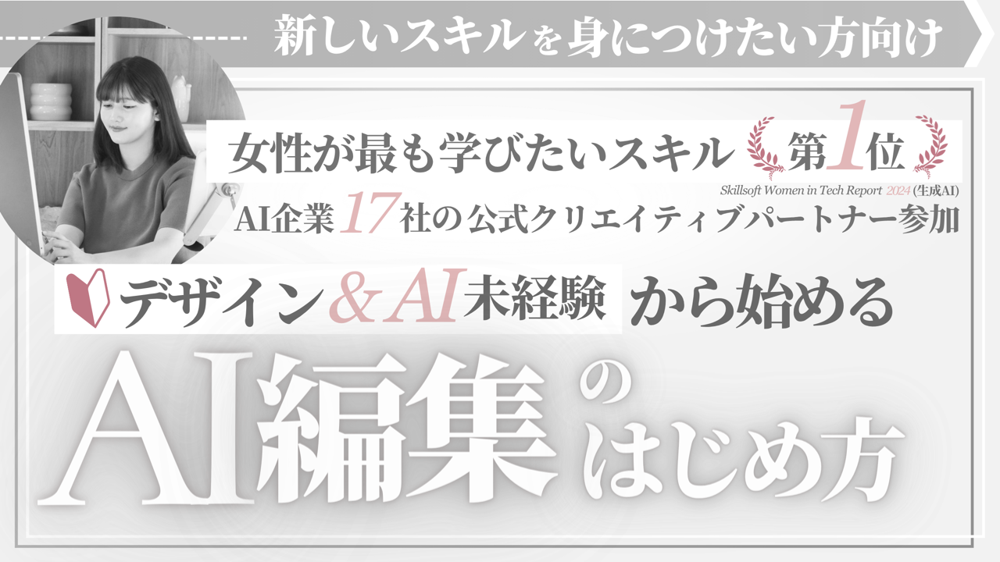

購入前の本音とQ&A
いただいたご質問や購入前の本音、ご相談をもとにまとめました。
私自身もこの分野で人生が変わった一人として、もっと本音で伝える必要があり、このページを急遽作りました。ぜひご購入を迷われている方に見ていただきたいです。
- 興味はあるけど、まだ決めかねています🤣！
- 私にもできるのかな
- AI時代に対する本音
- 楽しむことに遠慮してしまう
- 見せること、表現すること
- 言葉にしにくい気持ちへのお返事
- 続け方と内容のこと
- この分野とお仕事のこと
- ほかとの違い
- 購入前に知っておきたいこと
- 購入を決める前に
読みたいところを押すと、そこから読めます
興味はあるけど、
まだ決めかねています🤣！
- 「3日間で決められません」
- 「発表されてから、ものすごく悩んでいます」
Aわかります🤣
ご案内期間が短くてすみません💡
ただ補足すると・・3日間限定でご案内している特別動画付きの商品ページを何回かお送りしています。
一番最後にお送りしたサイトから、サイトの日より3日間です。その期間内であれば特別価格でご購入いただけます。
今回のご案内について改めてお伝えします
私がお仕事につなげた経験を今回の商品にまとめています。
実際のお仕事のやり取り
どのAI画像や動画がお仕事につながるのか
それなりに失敗や経験を経てまとめたものですので、まとめている具体的な内容については以降、どの場所でご質問いただいてもお答えしないと決めています。
この商品の制作には、5ヶ月をかけました。普段はプロンプトをSNSで無料で公開している立場ですが、この分野については、AI時代に本気で学びたい方に絞ってお伝えしています。
これからChatGPTを使ったことがある方と同じぐらい、画像生成をしたことがある方が増えてきます。それに伴いAIで画像や動画を作れること、そして、今回ご案内しているその先の分野が注目され始めます。
この分野の魅力をこれから私自身も発信していきます。
商品については、どこかで見聞きした情報ではありません。その分野に先駆けてチャレンジし、これから始める方や、まずは知りたい方へ向けてまとめたものです。
ChatGPTに質問しても基本的に返ってきません。
購入前の本音とQ&A
いただいたご質問やご相談に、このページでは本音ベースで回答していきますね。
- 「やりたいことはまだ決まってないよ」
- 「AIはちょっと気になるんだけど」
Qどんな方に向いている内容ですか？
AAI画像や動画に興味があり、その先の仕事の可能性も知ってみたい方に向けています。
今すぐ仕事にすると決めていなくても大丈夫です。ただ、画像をつくる方法だけをまとめた商品ではありません。
Qまだ何をしたいのか決まっていません。
A最初から決めなくても大丈夫です。興味を持ったところから、この分野の魅力を知った上で、その先をゆっくり考えていただけたら嬉しいです。
そう思っていただくために制作した商品でもあります。
Q画像を作るのが楽しいという状態から始めてもいいですか？
Aもちろんです。今回お伝えしたいのは、その先にお仕事として関わる分野もあるということ。
まずは知るところからでいいと思っています。
Q仕事にするかどうか、今決めなくてもいいですか？
Aはい。まだこの分野は始まったばかりだと思っているので、始める時はもちろん、仕事にしたいと思った時にも戻ってこれる商品になっています。
Q今の仕事を続けながらでもいいのでしょうか？
Aもちろんです。今のお仕事を辞めることが前提ではありません。AI時代の選択肢の一つとして知っていただきたいです。
私にもできるのかな
Qセンスに自信がありません。
A最初から自信がなくても大丈夫です。私自身も未経験から学んできました。まずは好きだなと思うものを大切にしていただきたいです。
Q絵が描けなくてもいいですか？
Aはい。AIを使った制作には、手で絵を描くこととは違う入り方もあります。まずは触れてみるところからで大丈夫です。
Qデザインの勉強をしたことがありません。
A未経験の方にもこの分野を知っていただきたいと思ってまとめています。最初から専門的な経験がある必要はありません。
Q年齢が気になっています。
A年齢だけで興味を諦める必要はないと思います。自分のペースで学んでいただけたら嬉しいです。
Q今さら初心者になるのが、少し恥ずかしいです。
Aその気持ち、よくわかります。何歳から始めても、最初は誰でも初心者だと思っています。
新しいことに挑戦している自分を、恥ずかしがらなくて大丈夫です。
QAIと聞くだけで、少し身構えてしまいます。
A難しそう、冷たそうと感じる方もいると思います。私にとっては、スマホで写真を撮る感覚の延長でした。
まずは身近なところから触れていただけたら嬉しいです。
Qなんだか難しそうです。
A最初はそう見えますよね。全部を一度に理解しなくても大丈夫です。わかるところから、ひとつずつ進めていただけたらと思います。
Qアイデアがなかなか浮かびません。
A最初から何でも思いつく必要はありません。好きな色や雰囲気など、小さな好みから始めてもいいと思います。
Q自分の感性を信じられません。
A最初から信じられる方は少ないと思います。いいなと思ったものを集めるうちに、自分の好みが見えてきます。
小さな「いいな」を大切にしてみてください。
Q誰かに「向いている」と言ってもらえたら安心なのですが。
A向いているかどうかは、最初から誰かが決められるものではないと思います。やってみて楽しいと感じるかを、大切にしていただきたいです。
Qみゅうさんの作品はすごくて、私には遠く感じます。
Aそう感じてくださるのも、よくわかります。私も未経験から始めました。今の作品やブランドとのお仕事は、そのあとに少しずつ積み重ねてきたものです。
皆さんに同じ道を歩いてほしいわけではありません。まずは、ご自身が興味を持てるかどうかを大切にしていただけたら嬉しいです。
Q誰かの作品を見るのは好き。でも、自分がつくる側になる想像ができません。
A最初はそう感じることもあると思います。まずは小さな好みから試してみて、つくる楽しさを知っていただけたら嬉しいです。
Q周りに同じことをしている人がいません。
A周りと同じことをしていなくても大丈夫です。自分が興味を持てるかを大切にしていただきたいです。
Qパソコンが苦手でも始められますか？
A無料から触れられる身近なツールもあります。ただし、実際の制作や仕事ではパソコンが必要になる作業もあるので、そこは正確にご案内したいです。
Q一度聞いただけで理解できる自信がありません。
A何度も見返しながら、ご自身のペースで進めていただけたらと思います。
AI時代に対する本音
- 「今からAIを勉強しても、もう遅い気がする」
- 「効率化の話は、正直ピンとこない」
- 「誰でもつくれるなら、私じゃなくてもいいよね」
- 「AIがどこまで進むのか、ちょっと怖い」
Q今からAIを勉強しても、追いつける気がしません。
A私は2023年からChatGPTを使ってきました。男性的な効率化やお仕事術のようなAI活用は、正直、今から勉強しなくてもいいのかなと思っています。
AIがほとんどいろんなことをできるようになって、ようやく任せられるようになったからです。
QAIでできることが多すぎて、ついていけません。
AAIでできることは、大きく分けると、効率化やお仕事術に使えたり、資料が作れたり、何でも聞けば答えてくれたりすることです。
最近だとMuseのようなAIエージェントが出てきて、身の回りのことを手伝ってくれるようにもなりました。
これらは私たちだけではなく、ほとんどの人が使える状態にあります。
Q誰でもAIで画像をつくれるなら、私がやる意味はありますか？
AAIでできることの中に、画像や動画をつくることが増えました。昔はクオリティの高い画像は全然つくれませんでしたが、これからはほとんどの人がつくれるようになります。
AI時代はほとんどのことを調べられて、ChatGPTに聞くこともできます。だからこそ、実際に体験したことや原体験のようなものが残っていくと思っています。
QAI画像をお仕事にするのは、ハードルが高く感じます。
Aお仕事にすると聞くと、ハードルを感じるかもしれません。でも、やることは基本的に変わりません。
テキストで伝えたり、本商品で紹介しているより詳しく伝える方法を使ったりして、作品をつくっていきます。
Q顔や声を出さないと、お仕事にはならないのでしょうか？
A私がこれまでお仕事をしてきた中で、ご連絡をいただいた方の9割は女性でした。顔や声を出さなくても、作品を見た方からお仕事のご連絡が来ています。
ただ、これは私の一つの例です。これから何十通りもあると思っています。
Q興味はあっても、お仕事までの距離が遠く感じます。
Aその距離は、その先の世界を知ることだと思っています。知ったうえで、自分がその先どうしていきたいかを考えていただけたら嬉しいです。
Q周りに置いていかれそうで、焦ります。
AAIの変化は速いので、焦る気持ちもわかります。全部を追いかけなくても大丈夫です。
興味を持てる分野をひとつ知っておくだけでも、違うと思います。
楽しむことに遠慮してしまう
- 「役に立たないことに時間を使うのは、ちょっと」
- 「家のことが終わってからじゃないと」
- 「楽しむだけなんて、ちょっと後ろめたい」
- 「楽しんでる自分を見られるのは照れる」
Q役に立たないことに時間を使うのが、苦手です。
Aすぐ役に立たなくても、楽しいと思える時間には意味があると思います。気持ちが軽くなることも、ひとつの「役に立つ」だと私は思っています。
Q家事や仕事を片づけてからでないと、楽しめません。
A真面目な方ほど、そう感じるのかもしれません。全部が終わるのを待たなくても大丈夫です。
10分だけ、自分の時間をつくってみるのもいいと思います。
Q上手にならないと、楽しんではいけない気がします。
A上手になる前から、楽しんでいいと思います。楽しみながらつくっているうちに、少しずつ上達していくものです。
Q休むことに、罪悪感があります。
Aいつも頑張っている方ほど、そう感じるのかもしれません。自分のための時間も、休むことと同じくらい大切だと思います。
Q夢中になると、時間を無駄にした気がしてしまいます。
A夢中になれる時間は、それだけで素敵だと思います。無駄だったかどうかを、あとから決めなくてもいいんです。
Q好きなことが、いつの間にか義務になってしまいます。
A真面目に向き合う方ほど、そうなりやすいのかもしれません。今回の内容は、全部をこなすためのものではありません。
楽しいと思える範囲で使っていただけたら嬉しいです。
Q楽しんでいる自分を、人に見せるのが照れくさいです。
A誰にも見せずに楽しむ時間があってもいいと思います。見せても見せなくても、どちらでも大丈夫です。
Q好きなことに時間を使うのが、少し贅沢に感じます。
A何に時間を使いたいかは、人それぞれだと思います。ご自身の生活を大切にしながら、無理のない形で考えていただけたら嬉しいです。
Q覚えることより楽しむことを大切にしたいです。
Aその気持ちも大切にしていただきたいです。今回の内容には仕事の話もありますが、最初からすべてを自分の課題にしなくてもいいと思います。
見せること、表現すること
- 「私の作品なんて、誰も見たくないよね」
- 「批判されたら立ち直れない」
- 「真似って思われたらどうしよう」
- 「名前を出すのは、まだ無理」
Q自分の作品を見せるのが恥ずかしいです。
A最初から公開しなくても大丈夫です。まずは自分のためにつくって楽しむ時間があってもいいですよね。
Q自分の世界観に、価値があるとは思えません。
A価値は、最初から決まっているものではないと思います。つくり続けるうちに、自分でも気づいていなかった良さが見えてくることもあります。
Q批判されたら、立ち直れない気がします。
A怖いと感じるのは当然だと思います。最初から誰かに見せる必要はありません。ご自身が安心できる範囲で楽しんでいただけたら嬉しいです。
Q人と違う表現を、避けてしまいます。
A人と違う表現は、それだけで目に留まることもあります。いきなり大胆にしなくても大丈夫です。
少しずつ自分らしさを足していけたらいいと思います。
Q誰かの真似だと思われるのが怖いです。
A好きな作品から刺激を受けるのは、自然なことだと思います。そこに自分の好きな色や雰囲気を少しずつ混ぜていくと、自分らしい作品に近づいていきます。
Q自分の名前を出すのが、恥ずかしいです。
A名前を出すかどうかは、ご自身で決めて大丈夫です。まずは自分のためにつくるところからでいいと思います。
Q完成していないものは、見せられません。
A完成するまで見せなくても大丈夫です。ご自身が納得できるまで、ゆっくりつくっていただけたらと思います。
Q誰にも見せない作品に、意味があるのかなと思ってしまいます。
Aあると思います。自分が見て嬉しくなる作品は、それだけで十分素敵です。
Q気持ちを言葉で説明するのが苦手です。
Aうまく言えなくても大丈夫です。好きな画像を参考にしたり、言葉を少しずつ足したりしながら形にしていけます。
言葉にしにくい気持ちへのお返事
- 「どうせ私なんて」
- 「頑張ってること、誰も知らないし」
- 「自分のことは、いつも後回し」
- 「本当は、ちょっと認めてほしい」
Q何か始めたいのに、いつも自分のことは後回しです。
Aそういう時間が続くこともありますよね。今すぐ大きく生活を変える必要はありません。
自分が気になったことに、少しだけ時間を使ってみるのもいいと思います。
Q自分のためにお金を使うことに、まだ迷いがあります。
A決して小さな金額ではないので、迷って当然だと思います。無理に背中を押すよりも、内容を知って納得して選んでいただきたいです。
Q何かを始めるなら、ちゃんと結果を出さなきゃと思ってしまいます。
A最初から結果まで決めなくてもいいと思います。まず知ること、試すことにも意味があると私は感じています。
Q周りの人は自分の道を見つけている気がします。
A人それぞれ、興味を持つ時期も進み方も違いますよね。比べるよりも、今のご自身が何に惹かれるかを大切にしていただきたいです。
Q本当は何かに夢中になりたい気持ちがあります。
Aその気持ちを大切にしていただきたいです。今回の分野がそのひとつになるかどうか、まずは知っていただけたらと思います。
Q今の私が、仕事の可能性を考えるなんて大げさでしょうか。
Aそんなことはないと思います。仕事にするかどうかを決める前に、選択肢を知っておくこともできます。
Q憧れる気持ちはあるけれど、自分のことになると急に自信がなくなります。
A最初から自信がある方ばかりではないと思います。私も未経験から学んできたので、その距離を少しでも近く感じていただけたら嬉しいです。
Q昔は好きなことがたくさんあったのに、最近はわからなくなりました。
A無理に答えを見つけなくてもいいと思います。少し気になるものに触れながら、ゆっくり見つけていただけたら嬉しいです。
Q私には何もないと思ってしまうことがあります。
A今までの経験や、好きだと感じることが、これからの興味につながることもあると思います。
何かを証明するために始めなくてもいいんです。
Q頑張っていることを、誰にも気づいてもらえません。
A毎日のことほど、見えにくいですよね。自分のためにつくった作品は、頑張ってきた自分を形にして残せるものでもあると思います。
Q自分で自分を褒められません。
A褒めるのが苦手な方は、少なくないと思います。つくれた画像を「いいな」と思えたら、それだけで十分です。
Q褒められても、つい否定してしまいます。
A照れてしまいますよね。否定する前に、一度「ありがとう」と受け取ってみるのもいいと思います。
Q誰かと比べられるのが、つらいです。
A比べられると苦しくなりますよね。つくる作品には、比べて決まる正解はないと思っています。
ご自身のペースで楽しんでいただけたら嬉しいです。
Q誰かに必要とされたい気持ちがあります。
Aとても自然な気持ちだと思います。お仕事は、誰かに必要とされる形のひとつでもあります。
今回の内容では、その入口で大切なことをお伝えしています。
Q仕事や家のこと以外の自分が、よくわかりません。
A役割の中で頑張ってきた方ほど、そう感じるのかもしれません。好きな色や雰囲気を集めていくと、別の自分が少しずつ見えてくることもあります。
Q小さな楽しみが、最近減ってしまいました。
A忙しい毎日だと、そうなりますよね。AIで画像をつくる時間が、小さな楽しみのひとつになったら嬉しいです。
Q一人の時間を、どう使えばいいかわかりません。
A最初は戸惑いますよね。好きなものを思い浮かべて画像にしてみるのも、楽しい時間の使い方だと思います。
Q自分のための、新しい習慣が欲しいです。
A素敵だと思います。毎日でなくても、週に一度自分のためにつくる時間があるだけで、気持ちが変わることもあります。
Q本気になって、失敗するのが怖いです。
A本気になるほど、怖くなりますよね。最初から本気にならなくても大丈夫です。楽しいと思える気持ちを、少しずつ育てていけたらいいと思います。
Q目標を口にすると、重くなってしまいます。
A口にしなくても大丈夫です。心の中で「やってみたい」と思っているだけで、十分だと思います。
Q挑戦しても、結局何も変わらない気がします。
Aそう思ってしまうときもありますよね。大きく変わらなくても、新しいことを知った分だけ、選べることは増えていくと思います。
Q今の自分を、否定したくありません。
A否定しなくていいと思います。今の自分のまま、新しいことを少し足してみるくらいの気持ちで大丈夫です。
Qこれまでの経験が、無駄になる気がします。
A無駄にはならないと思います。これまでの経験や好きなものが、つくる作品ににじみ出ることもあります。
Q興味はあるのに、誰かに説明できる理由がありません。
A最初から立派な理由は必要ないと思います。ご自身が少し気になった、その気持ちから考えていただいていいと思います。
Q誰にも言わずに、自分だけで始めたいです。
Aもちろん、ご自身のペースで考えていただけます。最初から誰かに発表する必要はありません。
Q本当は少し仕事にも興味があります。でも言うのが恥ずかしいです。
Aその気持ちも大切にしていただきたいです。今すぐ誰かに話したり、目標を宣言したりする必要はありません。
Q自分に期待して、またがっかりするのが怖いです。
A何か大きな結果を約束するものではありません。まずはどんな分野なのかを知り、できそうなことを一つずつ考えていただけたらと思います。
Q『私でも始めていいのかな』という気持ちが、ずっとあります。
Aもちろん、興味を持っていただくことに遠慮はいりません。ただ、購入は別のことです。
内容や条件を見て、今のご自身に合うと思えたときに選んでいただけたら嬉しいです。
続け方と内容のこと
- 「どうせ続かない気がする」
- 「全部覚えられる自信ない」
- 「忙しくて、そんな時間ない」
- 「難しい言葉が出てきたら無理かも」
Q以前にも何かを始めたのに、続かなかったことがあります。
Aそういう経験があると、また同じことになるかなと迷いますよね。私も、何かを始めるときに全部を一度に覚えなくてもいいと思っています。
今回は手元に置いて、必要なときに戻ってこられる内容にしています。少しずつで大丈夫です。
Q始める前から、続かなかったときのことを考えてしまいます。
A最初から完璧に続けることを目標にしなくてもいいと思います。手元に置いて、また見たいときに戻れる形で使っていただけたら嬉しいです。
Qどうせ続かない気がします。
Aそう思ってしまう日もありますよね。毎日続けることより、また開きたくなったときに戻ってこられることを大切にしています。
間があいても、そこからまた始めて大丈夫です。
Q内容が多くて、全部覚えられるか心配です。
A全部を一度に覚えていただくためのものではありません。手元に置いて、画像をつくりながら必要なところを見返していただけるように考えています。
Q毎日時間を取れなくてもいいですか？
Aもちろんです。ご自身の生活に合わせて、無理なく進めていただけたら嬉しいです。
Q忙しくて、少しずつしか読めません。
A短い時間でもいいと思います。読む日も、画像をつくる日も、ご自身のペースで進めていただけたら嬉しいです。
Q途中でお休みしてもいいですか？
Aもちろん、ご自身のペースで進めていただけます。閲覧条件については購入前のご案内をご確認ください。
Qどこから見たらいいかわかりません。
Aまずは全体を見て、興味のある内容から触れてみてください。推奨される順序がある部分は、商品内の案内に沿って進めてくださいね。
Q全部を順番に学ばないといけませんか？
A最初からすべてを進める必要はありません。興味や目的に合わせて、少しずつ知っていただけたらと思います。
Q2つとも、最初から全部学ばないといけませんか？
Aいいえ。興味のあるところから、ご自身のペースで進めていただけたらと思います。必要になったときに見返せるようにまとめています。
Q難しい言葉が出てきたらどうしよう。
A最初から全部知っている必要はありません。わからないところは調べたり見返したりしながら、少しずつ理解していただけたらと思います。
QAI編集も最初から学ぶ必要がありますか？
AAI編集の内容もセットですが、最初からすべてを学ぶ必要はありません。興味に合わせて見ていただけたら嬉しいです。
Q学びながら画像をつくってもいいですか？
Aもちろんです。むしろ、手元に置いておきながら、実際に画像をつくる時間と一緒に楽しんでいただけたらと思っています。
Q買ったら全部やらないといけない気がします。
A最初から全部を終わらせる必要はありません。手元に置いて、必要なときに見返しながら学んでいただけたら嬉しいです。
Q買ったら『頑張らなきゃ』という気持ちになりそうです。
Aそう思う方もいらっしゃると思います。全部を急いで進めるより、必要なときに見返せるものとして使っていただけたら嬉しいです。
Q買ったら、何か成果を出さないといけない気がします。
Aそう思うと、始めること自体が重くなってしまいますよね。今回の内容を読んだからといって、すぐに何かを証明する必要はありません。
自分のペースで学びながら、その先を考えていただけたらと思っています。
Q今まで買ったものを、最後まで使えなかったことがあります。
Aだからこそ、今回の内容が本当にご自身に必要か、購入前に確認していただきたいです。
無理に決めなくて大丈夫です。
この分野とお仕事のこと
- 「稼げないなら意味ないんじゃない？」
- 「ブランドのお仕事なんて、遠すぎる」
- 「プロ向けの話なんでしょ」
- 「画像がつくれたら、それでよくない？」
QAIクリエイティブって、どんな分野ですか？
AAIを使った画像や動画などの制作を、表現やお仕事につなげていく分野です。今回の内容では、その先の仕事で大切なこともまとめています。
Q画像をつくれることと、仕事にすることは違いますか？
Aはい。お仕事では、依頼内容を理解することや修正、納品までの進め方も大切になります。
Q画像をつくるのと、お仕事としてつくるのは違いますか？
Aはい。お仕事では、相手が求めるものを理解すること、修正に対応すること、納品まで責任を持つことも大切になります。
今回お伝えしたいのは、そうした部分も含めたお仕事のいろはです。
Qどんなお仕事があるのか、まだ想像できません。
A最初はそうだと思います。今回、ブランドや企業との制作をわかりやすい例として紹介していますが、それだけが仕事の形ではありません。
まずは画像や動画をつくった先に、どんなことが求められるのかを知っていただきたいです。
Qブランドとのお仕事が中心なのでしょうか？
Aブランドや企業は、実際の仕事をわかりやすくお伝えするための例です。最初からそこを目指していただく必要はありません。
Qブランドのお仕事は、私には遠い世界に感じます。
Aそうですよね。今回ブランドや企業とのお仕事を紹介しているのは、皆さんに同じ仕事を目指してほしいからではありません。
実際の制作では、画像をつくるだけでなく、依頼を理解したり、修正したり、納品したりすることも大切です。
私が経験したことを、身近なところから知っていただきたいと思っています。
Q画像がつくれたら、すぐ仕事になりますか？
Aつくれることがそのままお仕事の保証になるわけではありません。だからこそ、その先で大切になることを知っていただきたいと思っています。
Qお仕事につながらない画像のつくり方もあるのでしょうか？
A画像が素敵なだけでは、お仕事として求められるものと一致しない場合もあります。だからこそ、依頼内容や使われ方を考えることも大切です。
私が現場で感じてきたことを、今回の内容にまとめています。
Q稼げないなら、意味がないのでしょうか？
Aそんなことはないと思います。今回の内容にはお仕事の話も入っていますが、稼ぐことだけがゴールではありません。
知って、選べるようになることにも意味があると思っています。
Qプロを目指す人向けの内容に見えてしまいます。
Aお仕事の話が多いので、そう見えるかもしれません。でも、未経験の方にこそ知っていただきたくてまとめました。
プロを目指すかどうかは、そのあとで決めていただけます。
Q好きなことを仕事にするのが、少し怖いです。
A好きなことだからこそ、大切にしたいですよね。仕事にするかどうかは、ご自身で選べます。
まずはどんな仕事なのかを知るところからで大丈夫です。
Q仕事の話を聞くだけでも意味がありますか？
Aはい。まずはどんな分野なのかを知って、その先を考えていただけたらと思います。
Q実際のお仕事では何が大切ですか？
Aつくることに加えて、依頼を理解し、修正し、納品まで進めることも大切です。私が経験してきたことをもとにお伝えしています。
Q仕事にしていくうえで気をつけたいこともわかりますか？
Aはい。画像をつくれたら終わり、ではないことも、実際の仕事を通して感じてきました。
仕事にしていく中で大切だと思ったことを、今回の内容にまとめています。
Q制作から修正、納品までのことも含まれていますか？
A私自身が制作から修正・編集、納品まで経験してきたことを土台にしています。ただし、お仕事ごとに必要な対応は異なるので、すべての案件で同じように進められるという意味ではありません。
QAI編集は動画編集の仕事だけを目指すものですか？
AAI編集にもいろいろな使い方があります。セットの内容を確認して、ご自身の興味に合わせて学んでいただけたらと思います。
Q仕事にするかは学んでから考えてもいいですか？
Aもちろんです。最初から答えを出す必要はありません。
Q自分の感性を活かすって、どういうことですか？
A好きだと思う色や雰囲気、つくってみたい世界を大切にすることも、その入口だと思います。
仕事にするかどうかは、その先で考えていただけます。
Q私の『好き』が、仕事につながるなんてまだ想像できません。
Aすぐに想像できなくても自然だと思います。私自身も未経験からのスタートでした。まずは、好きなものをつくる楽しさと、その先の仕事で求められることの両方を知っていただきたいです。
ほかとの違い
- 「ネットで調べれば、わかるんじゃない？」
- 「無料でもできそうだけど」
- 「2つって、何が違うの？」
- 「結局、何を買うの？」
Qみゅうさんも未経験から始めたんですか？
Aはい。私も未経験からのスタートでした。だからこそ、最初に知っておきたかったことを大切にしています。
Qネットで調べれば情報は見つかりますよね？
A本当にそうだと思います。今回大切にしたのは、調べて集めた情報だけではなく、私自身の原体験や実際のお仕事の中で学んだことです。
Q無料でできることとの違いは何ですか？
A画像や動画を無料からつくれる時代になりました。今回の内容は、つくれた先にお仕事にしていく中で大切なことをまとめています。
Q2つの商品の違いは何ですか？
A「AIアーティスト＆クリエイターのはじめ方」は、AIクリエイティブを仕事にしていくための考え方や進め方を学ぶ内容です。
「AI編集のはじめ方」はAI編集について学ぶ内容です。今回のセットには両方が含まれています。
Q何を買うのか、一言で知りたいです。
AAI画像や動画をつくれた先に、クリエイティブをお仕事にしていくうえで大切なことを、私の経験からまとめた買い切りの商品です。
購入前に知っておきたいこと
- 「パソコン、持ってないんだけど」
- 「あとからお金がかかるのは嫌だな」
- 「買ったあと、ちゃんと見られるのかな」
- 「質問って、どこまでしていいの？」
Qパソコンは必要ですか？
AChatGPTなどスマートフォンから使えるツールもあります。ただし、取り組む制作や使うツールによってはパソコンが必要な場合もあります。
すべてスマートフォンだけで完結するとお約束するものではありません。
Qスマートフォンだけで全部できますか？
Aできることもありますが、すべてではありません。必要な環境は取り組む内容によって変わります。
Qスマートフォンやタブレットでも見られますか？
A内容を見ることと、実際に制作することでは必要な環境が違います。閲覧できる端末や、各制作に必要な環境は、購入前に確認できるようにご案内します。
QAIツールに別料金はかかりますか？
AChatGPTやMuseなど、無料から始められるものもあります。一部の機能や利用量によっては、外部ツールの有料プランが必要になる場合があります。
Q商品に月額料金はかかりますか？
A今回の商品は買い切りで、商品自体に追加の月額料金はありません。外部の有料ツールの費用は別になります。
Q何度でも見られますか？
A一度ご購入いただければ繰り返しご覧いただける形です。閲覧できる期間や提供条件については、正式な利用条件をご確認ください。
Q一度購入したら、いつまで見られますか？
A繰り返しご覧いただける内容です。ただし、無期限の提供を保証するかどうかは正式な利用条件によります。
閲覧期間やサービスの提供条件は、購入前にご確認ください。
Qお便り便って何ですか？
A商品についての質問や、内容の更新に関するご案内のために用意しているものです。対応方法や範囲はご案内に沿ってご利用ください。
Q質問はどこまでできますか？
A商品の内容についての質問を想定しています。個別の制作代行やお仕事の紹介をお約束するものではありません。
詳しい範囲は正式な案内で明確にします。
Qお便り便では、どんな質問ができますか？
A今回の内容についてご質問を受け付けるために、お便り便をご用意しています。個別添削や仕事の相談などが含まれるか、回答方法や対応範囲は別途明確にご案内します。
Q内容は更新されますか？
A更新に関するご案内は、お便り便でお知らせする予定です。更新の頻度や内容を保証するものではないため、現時点で含まれる内容を基準にご検討ください。
Q内容が更新された場合はどうなりますか？
A商品の更新については、お便り便でご案内する予定です。更新の対象範囲や追加費用の有無は、実際の提供条件に合わせて明確にお伝えします。
Q購入後はどうやって見られますか？
A購入後の案内に沿ってご覧いただく形です。具体的な受け取り方法やログイン手順は、購入ページの正式な案内をご確認ください。
Q購入後は、まず何をすればいいですか？
A購入後の案内に沿って内容をご覧いただき、まずは興味のあるところから確認していただけたらと思います。
実際の閲覧手順は、購入後のご案内をご確認ください。
Q仕事につながる保証はありますか？
Aお仕事や収入を保証するものではありません。実際の経験をもとに、仕事にしていくために大切なことを学んでいただく商品です。
Q購入後のキャンセルや返金はできますか？
A大切なことなので、お申し込み前に必ず確認していただきたいです。キャンセルや返金は、販売ページに記載された利用規約に沿って取り扱います。
Q支払い方法と購入後の案内はどこで確認できますか？
A利用できるお支払い方法は購入フォームで確認できます。購入後の案内を受け取れるよう、入力するメールアドレスと受信設定もご確認ください。
購入を決める前に
- 「本当に私に必要なのかな」
- 「買って後悔したくない」
- 「他にもっと良いものがあるかも」
- 「もう少し様子を見たい」
Q今の自分にはまだ早いでしょうか？
A未経験の方にも知っていただきたい内容です。ただ、今必要だと感じるかどうかは、ご自身の気持ちを大切にしていただきたいです。
Q他にもっと良い方法がある気がします。
Aいろいろな学び方があるので、比べたくなるのは自然だと思います。今回の内容は、AI画像や動画をつくれた先のことをまとめたものです。
その部分を知りたいと思えるかで、選んでいただけたら嬉しいです。
Q購入前に内容を詳しく確認できますか？
A内容や目次、提供条件をご確認いただいたうえで判断していただきたいと思っています。
公開されている案内を見て、気になる点はご質問ください。
Qもし自分に合わなかったらどうしよう。
Aそう思うのも自然なことだと思います。どんなことを学べるか、何が含まれないかまで確認してから決めていただきたいです。
Q一度選んだら、もう戻れない気がします。
Aそんなことはないと思います。学んでみて違うと思ったら、別の道を選んでもいいんです。
今回の内容も、選択肢のひとつとして考えていただけたら嬉しいです。
Q始めるタイミングがわかりません。
A焦って決める必要はありません。ただ、完璧なタイミングを待っていると、なかなか来ないこともあります。
気になっている今の気持ちを、大切にしていただけたらと思います。
Q決めるのを、つい先延ばしにしてしまいます。
A大事なことほど、迷ってしまいますよね。急がなくて大丈夫です。内容を確認して、納得できたときに決めていただけたらと思います。
Q誰かに背中を押してほしいです。
Aその気持ち、よくわかります。でも、無理に背中を押すことはしたくないと思っています。
ご自身が「やってみたい」と思えたときが、いちばんいいタイミングです。
Q失敗してもいいよ、と言ってほしいです。
A失敗しても大丈夫です。うまくいかなかったことも、次につくるときの材料になります。
Q始める前に、正解を知っておきたいです。
A正解がわかってから始めたい気持ち、わかります。ただ、つくる分野には一つの正解があるわけではありません。
試しながら、自分なりの答えを見つけていけたらいいと思います。
Q購入を見送るのもありですか？
Aもちろんです。今のご自身に必要だと思えるかを大切にしてください。
Q私が今すぐ買うべきか、まだ決められません。
A迷っているときは、内容や条件を確認してから考えていただきたいです。興味があることと、今購入することは別の話なので、ご自身の納得を大切にしていただけたらと思います。
Q質問する前に、基本的なことを聞いてもいいのか迷います。
A気になることがあれば、購入前に確認していただきたいです。わからないまま決めなくても大丈夫です。
Q最後に、一番知ってほしいことは何ですか？
AAIでできることが増えている今、私が未経験から学び、仕事にしてきたこの分野を、自分の可能性のひとつとして知っていただきたいです。
最初から何かを決めなくても、ゆっくり考えていただけたら嬉しいです。
ここまで見てくださった方へ
未経験から学んだことをまとめました
「知って、はじめる」
ための2つのコンテンツ

あなたの挑戦を心から応援しています